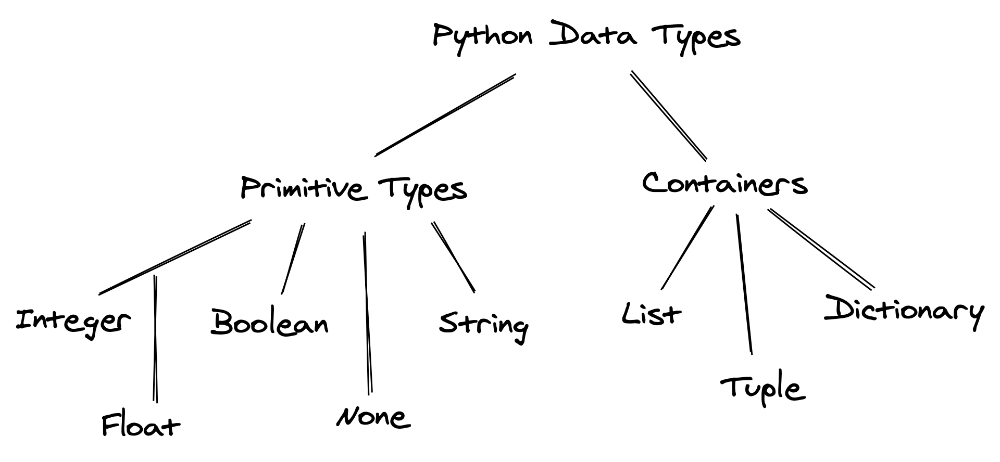

2 Variables, expressions and statements
2.1 Commenting code
The # symbol can be used to comment the code. Anything after the # sign is ignored by python. Commenting a code may have several purposes, such as:
Describe what is going to happen in a sequence of code
Document who wrote the code or other ancillary information
Turn off a line of code - perhaps temporarily
For example, below is code with a comment to describe the purpose of the code:
#Computing number of hours of lecture in this course
print("Total lecture hours of STAT201=",10*3*(5/6))Total lecture hours of STAT201= 25.02.1.1 Practice exercise 1
Which of the following lines is a comment:
#this is a comment
##this may be a comment
A comment#
2.2 print() function in python
The print() function is a fundamental tool for displaying information.
2.2.1 Basic Examples
# Printing a simple string
print("Hello, World!")Hello, World!# Printing a string with a number
print ("The total number of seconds in a day is", 24*60*60)The total number of seconds in a day is 86400# combine multiple strings
print("Hello, " + "World!")Hello, World!# use f-strings for formatted output
name = "World"
print(f"Hello, {name}!")Hello, World!2.2.2 Python f-Strings (Formatted String Literals)
f-strings provide a concise way to embed expressions inside strings. Introduced in Python 3.6, they improve readability and efficiency.
2.2.2.1 Syntax
- Use
forFbefore the string. - Embed variables or expressions in
{}.
name = "Alice"
age = 25
# use f-strings for formatted output
print(f"{name} is {age} years old.")Alice is 25 years old.value = 12345.6789
print(f"Rounded: {value:.2f}, With commas: {value:,}")Rounded: 12345.68, With commas: 12,345.67892.2.3 Practice exercise 2
Use the print() function to:
- Display your name, age, and favorite hobby.
- Format the output neatly using f-strings.
2.3 Data types
Python provides several built-in data types for storing different kinds of information in variables. These data types can be broadly categorized into primitive data types and collection (containers) data types as shown below. While collection data types will be covered in Chapter 5, this chapter focuses on primitive data types, which are used to represent a single value.
2.3.1 Primitive Data Types
They represent a single value. In Python, primitive data types include:
- Integer (
int): Whole numbers (e.g.,10,-3). - Floating-point number (
float): Numbers with decimals (e.g.,3.14,-2.7). - Boolean (
bool): Logical valuesTrueorFalse. - None type (
None): Represents the absence of a value. - String (
str): A sequence of characters (e.g.,"hello",'world').
The data type of the object can be identified using the in-built python function type(). For example, see the following objects and their types:
type(4)inttype(4.4)floattype('4')strtype(True)bool2.3.2 Practice exercise 3
What is the datatype of the following objects?
‘This is False’
“This is a number”
1000
65.65
False
2.4 Variables
A variable is a container for storing data values. Variables in Python are dynamically typed, meaning you don’t need to specify their type when declaring them.
2.4.1 Variable Declaration:
- You can create a variable by assigning a value to it using the
=operator. - Example:
python x = 10 # Integer name = "Alice" # String pi = 3.14 # Float is_active = True # Boolean
2.4.2 Dynamic Typing:
- The type of a variable is determined by the value assigned to it.
- Example:
python x = 10 # x is an integer x = "Python" # x is now a string
2.4.3 Variable Naming Rules:
- Names must start with a letter (a-z, A-Z) or an underscore (_).
- Names can only contain letters, numbers (0-9), and underscores.
- Names are case-sensitive (
nameandNameare different variables). - Reserved keywords (e.g.,
if,for,while) cannot be used as variable names.
There are certain reserved words in python that have some meaning, and cannot be used as variable names. These reserved words are:

2.4.4 Best Practices:
- Use descriptive variable names:
python total_price = 100 - Use snake_case for multi-word names:
python user_age = 25
Python style guide: Please refer to the python style guide for best coding practices, such as naming variables, using spaces, tabs, and styling the different components of your code.
2.4.5 Example Usage
# Variable assignments
a = 5
b = 3.14
message = "Hello, World!"
is_valid = True# Printing variables
print(a) # Output: 5
print(message) # Output: Hello, World!5
Hello, World!# Reassigning variables
a = "Now I am a string!"
print(a) Now I am a string!2.4.6 Checking Variable Types
You can use the type() function to check the type of a variable.
x = 10
print(type(x))
y = "Python"
print(type(y)) <class 'int'>
<class 'str'>2.4.7 Practice exercise 4
Which of the following variable names are valid?
var.name
var9name
_varname
varname*
In the statements below, determine the variable type
value = “name”
constant = 7
another_const = “variable”
True_False = True
2.5 Assignment statements
Values are assigned to variables with the assignment statement (=). An assignment statement may have a constant or an expression on the right hand side of the (=) sign, and a variable name on the left hand side.
For example, the code lines below are assignment statements
var = 2
var = var + 32.6 Expressions
2.6.1 Mathematical Operations and Their Operators in Python
Python provides the following operators for performing mathematical operations:
- Exponentiation (
**): Raises a number to the power of another.- Example:
2 ** 3results in8.
- Example:
- Modulo (
%): Returns the remainder of a division.- Example:
10 % 3results in1.
- Example:
- Multiplication (
*): Multiplies two numbers.- Example:
4 * 5results in20.
- Example:
- Division (
/): Divides one number by another, resulting in a float.- Example:
10 / 2results in5.0.
- Example:
- Addition (
+): Adds two numbers.- Example:
7 + 3results in10.
- Example:
- Subtraction (
-): Subtracts one number from another.- Example:
9 - 4results in5.
- Example:
2.6.2 Operator Precedence in Python
The operators listed above are in decreasing order of precedence, meaning:
- Exponentiation (
**) is evaluated first. - Modulo (
%) is evaluated next. - Multiplication (
*) follows. - Division (
/), if present, has the same precedence as multiplication. - Addition (
+) and Subtraction (-) are evaluated last, from left to right.
2.6.2.1 Example: Precedence in Action
Consider the expression: 2 + 3 % 4 * 2
To evaluate this, Python follows the precedence rules:
- Modulo (
%) is evaluated first:
3 % 43Multiplication (*) is evaluated next:
3 * 26Addition (+) is evaluated last:
2+68Thus, the result of the expression 2 + 3 % 4 * 2 is 8.
2.6.2.2 Key Takeaways
- Precedence determines the order in which operations are performed in an expression.
- Parentheses
()can be used to override the default precedence and control the order of evaluation.
result = (2 + 3) % (4 * 2)
print(result)52.6.3 Practice exercise 5
Which of the following statements is an assignment statement:
x = 5
print(x)
type(x)
x + 4
What will be the result of the following expression:
1%2**3*2+12.7 Converting datatypes
Sometimes a value may have a datatype that is not suitable for using it. For example, consider the variable called annual_income in the code below:
annual_income = "80000"Suppose we wish to divide annual_income by 12 to get the monthly income. We cannot use the variable monthly_income directly as its datatype is a string and not a number. Thus, numerical operations cannnot be performed on the variable annual_income.
We’ll need to convert annual_income to an integer. For that we will use the python’s in-built int() function:
annual_income = int(annual_income)
monthly_income = annual_income/12
print("monthly income = ", monthly_income)monthly income = 6666.666666666667Similarly, datatypes can be converted from one type to another using in-built python functions as shown below:
#Converting integer to string
str(9)'9'#Converting string to float
float("4.5")4.5#Converting bool to integer
int(True)1Sometimes, conversion of a value may not be possible. For example, it is not possible to convert the variable greeting defined below to a number:
greeting = "hello"However, in some cases, mathematical operators such as + and * can be applied on strings. The operator + concatenates multiple strings, while the operator * can be used to concatenate a string to itself multiple times:
"Hi" + " there!"'Hi there!'"5" + '3''53'"5"*8'55555555'2.8 User input
Python’s in-built input() function is used to take input from the user during program execution. It reads a line of text entered by the user and returns it as a string.
# suppose we wish the user to onput their age:
age = input("Enter your age:")The entered value is stored in the variable age and can be used for computation.
2.8.0.1 Key Point
- The
input()is always returned as a string, even if the user enters a number. - You can convert the input to other types (e.g.,
int,float) using type conversion functions. - The program execution pauses until the user provides input.
2.8.1 Examples
# basic input
name = input("Enter your name: ")
print("Hello, " + name)# using f-string for formatted output
name = input("Enter your name: ")
print(f"Hello, {name}!")# To take numeric input, you need to convert the string to an appropriate data type:
age = int(input("Enter your age: "))
print(f"You will be {age + 1} years old next year.")# input for calculating the area of a circle
radius = float(input("Enter the radius of the circle: "))
area = 3.14 * radius ** 2
print(f"The area of the circle is {area}")2.8.2 Practice exercise 6
Ask the user to input their year of birth, and print their age.
2.9 Programming errors
There are 3 types of errors that can occur in a program - syntax errors, run-time errors, and semantic errors.
2.9.1 Syntax errors
Syntax errors occur if the code is written in a way that it does not comply with the rules / standards / laws of the language (python in this case). For example, suppose a values is assigned to a variable as follows:
9value = 2The above code when executed will indicate a syntax error as it violates the rule that a variable name must not start with a number.
2.9.2 Run-time errors
Run-time errors occur when a code is syntactically correct, but there are other issues with the code such as:
- Misspelled or incorrectly capitalized variable and function names
- Attempts to perform operations (such as math operations) on data of the wrong type (ex. attempting to subtract two variables that hold string values)
- Dividing by zero
- Attempts to use a type conversion function such as
inton a value that can’t be converted to anint
For example, suppose a number is multipled as follws:
multiplication_result = x * 4The above code is syntactically correct. However, it will generate an error as the variable x has not been defined as a number.
2.9.3 Semantic errors
Semantic errors occur when the code executes without an error being indicated by the compiler. However, it does not work as inteded by the user. For example, consider the following code of mutiplying the number 6 by 3:
x = '6'
x * 3'666'If it was intended to multiply the number 6, then the variable x should have been defined as x=6 so that x has a value of type integer. However, in the above code 6 is a string type value. When a string is multiplied by an integer, say n, it concatenates with itself n times.
2.9.4 Practice exercise 7
Suppose we wish to compute tax using the income and the tax rate. Identify the type of error from amongst syntax error, semantic error and run-time error in the following pieces of code.
income = 2000
tax = .08 * Income
print("tax on", income, "is:", tax)income = 2000
tax = .08 x income
print("tax on", income, "is:", tax)income = 2000
tax = .08 ** income
print("tax on", income, "is:", tax)2.9.5 Practice exercise 8
The formula for computing final amount if one is earning compund interest is given by: \[A = P\bigg(1+\frac{r}{n}\bigg)^{nt},\]
where:
P = Principal amount (initial investment),
r = annual nominal interest rate,
n = number of times the interest is computed per year,
t = number of years
Write a Python program that assigns the principal amount of $10000 to variable P, assign to n the value 12, and assign to r the interest rate of 8%. Then have the program prompt the user for the number of years t that the money will be compounded for. Calculate and print the final amount after t years.
What is the amount if the user enters t as 4 years?